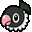
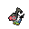

Pokédex / #441

Chatot #441
NormalFlying
Its tongue is just like a human’s. As a result, it can cleverly mimic human speech.
Generation 4 · Sinnoh
Stats
| Attack | 65 | |
|---|---|---|
| Defense | 45 | |
| Sp. Atk | 92 | |
| Sp. Def | 42 |
In the wild
| Wild level | 40–50 |
|---|---|
| HP | 76 |
| Experience | 10 |
| Egg groups | Flying |
Evolution
- Does not evolve.
Moves
| Level | Move | Type | Category | Power | Energy | Cooldown | Effect | |
|---|---|---|---|---|---|---|---|---|
| 1 | Peck | Flying | Physical | 35 | 35 | 6s | Peck inflicts damage and has no secondary effect. | |
| 5 | Growl | Normal | Status | – | 60 | 60s | The user growls in a cute way, making the foe lower its ATTACK. stat. | |
| 10 | Sing | Normal | Status | – | 100 | 120s | Sing puts the target to sleep. | |
| 15 | Mirror Move | Flying | Status | – | 130 | 25s | Mirror Move copies the target's last move. If there isn't a last move, copy random. | |
| 20 | Fury Attack | Normal | Physical | 15 | 45 | 9s | Fury Attack does damage, hitting 2-5 times per use. | |
| 25 | Echoed Voice | Normal | Special | 40 | 50 | 6s | Echoed Voice deals damage and has no secondary effect. | |
| 30 | Gust | Flying | Special | 40 | 40 | 9s | Gust deals damage and has no secondary effect. | |
| 35 | Snore | Normal | Special | 50 | 60 | 10s | Snore can only be used whilst the user is sleeping and will fail if the user is not. | |
| 40 | Swift | Normal | Special | 60 | 60 | 9s | Swift deals damage and ignores changes to the Accuracy and Evasion stats. | |
| 45 | Hidden Power | Normal | Special | 60 | 60 | 18s | A unique attack that varies in type depending on the Pokemon using it. | |
| 50 | Chatter | Flying | Special | 65 | 70 | 15s | The user attacks with a deafening noise made of sound waves. This confuses the target. | |
| 55 | Hyper Voice | Normal | Special | 90 | 100 | 21s | Hyper Voice inflicts damage and has no secondary effect. | |
| 60 | Uproar | Normal | Special | 90 | 100 | 25s | The user attacks in an uproar for three turns. During that time, no Pokemon can fall asleep. | |
| 65 | Synchronoise | Psychic | Special | 120 | 130 | 27s | Using an odd shock wave, the user inflicts damage on any Pokemon of the same type in the area around it. |
Field abilities
None
Special abilities
Keen EyeTangled Feet
Egg moves
AgilityAir CutterBoomburstDefogEncoreNasty PlotNight ShadeSleep TalkSteel WingSupersonic
Technical machines
Aerial AceDouble TeamFacadeHidden PowerProtectRain DanceRestSecret PowerSteel WingSubstituteToxic
Drops
| Item | Amount | Chance | |
|---|---|---|---|
| bamboo leaves | 1 | 100% | |
| bamboo stick | 1 | 100% | |
| bunch of wheat | 1–4 | 83.3% | |
| bitten apple | 1 | 55.6% | |
| acorn | 1 | 33.3% | |
| hard claws | 1 | 12.5% | |
| forbidden fruit | 1 | 10% | |
| cookie | 1–5 | 5% | |
| red apple | 1–5 | 5% | |
 | chatot doll | 1 | 0.1% |
| Love Plate | 1 | 0.05% | |
| held silk scarf | 1 | 0.01% |